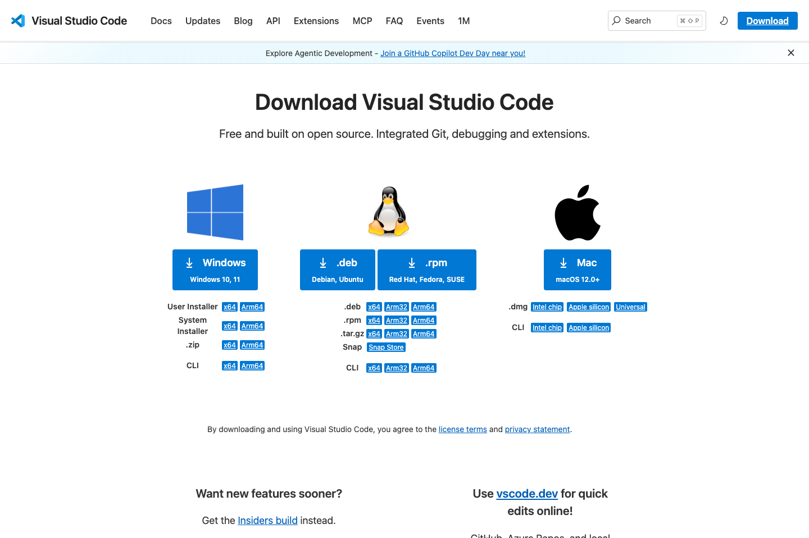

설치 순서
- VS Code 공식 다운로드 페이지 열기
- Windows 10/11이면 User Installer x64 선택. ARM PC면 Arm64 선택
- 설치 파일 실행
- 설치 후 VS Code 실행

Tool Guide
VS Code 설치 권장, 수업 기본 예시 편집기, Windows 기준은 User Installer 선택
설치 순서

설치 후 확인
설치 후 %PATH% 연결 확인. 새 터미널에서 code . 동작 확인.
code .왜 User Installer인가
User Installer 선택 이유, 관리자 권한 없이 설치 가능, 업데이트도 편함
설치 후 바로 할 일
수업 전 권장 확장
로그인
WSL을 함께 쓸 경우
WSL 확장 연결 시 Linux 컨텍스트에서 편집 가능, Windows 사용자라면 이 흐름까지 준비
자주 막히는 경우
code . 가 안 되면 새 터미널 열기공식 링크